Running example everywhere: company Acme, servers
web1.acme.example and db1.acme.example, user Alice, role
developers, local account deploy, PKI Manager at pki.acme.example.
Colours: orange = User CA and user certificates,
green = Host CA and host certificates.
Why SSH certificates
Plain keys do not scale, and "trust on first use" trusts nothing. A certificate authority (CA) fixes both: trust one signer instead of every key.
Problem 1: key sprawl
Every server has its own
authorized_keys. People × servers lines. Miss one when someone leaves, and
they keep access.
Problem 2: trust on first use
The first connection asks "fingerprint? yes/no" and you cannot check it. A rebuilt server shows a scary warning.
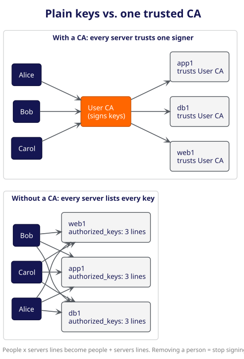
A certificate is your normal public key plus signed fields: key ID, principals
(roles), validity dates and a serial. Change one byte and the signature breaks. Read one with
ssh-keygen -L -f ~/.ssh/id_ed25519-cert.pub.
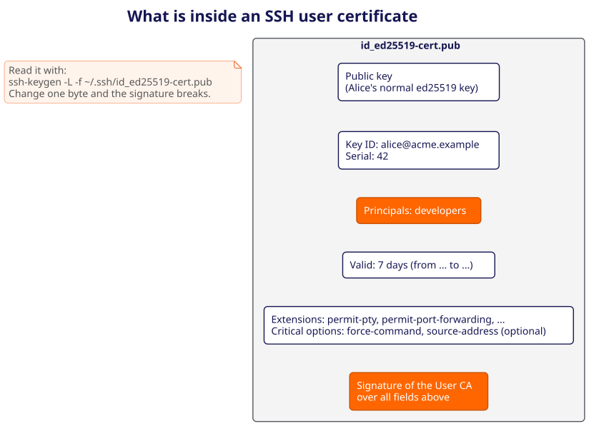
PKI Manager is the CA. The CA private keys live in a key management system and never leave it. PKI Manager signs, tracks, and generates every file; it never logs in to your machines — you place the files by hand or with Ansible.
Two CAs, trust crosses over
Every login answers two questions, so there are two CAs.
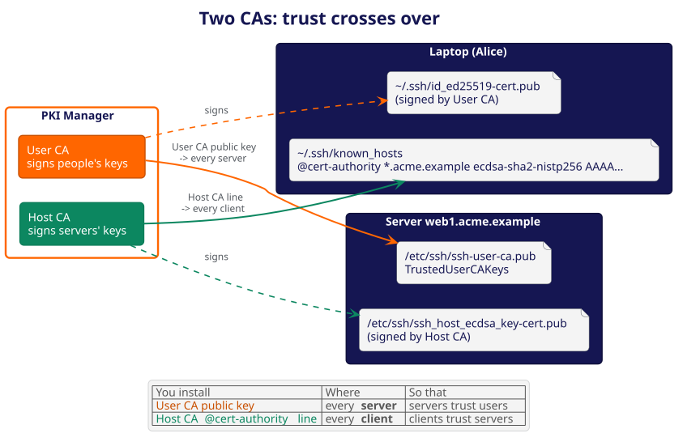
User CA → every server
Signs people's keys. Servers trust it
through TrustedUserCAKeys /etc/ssh/ssh-user-ca.pub.
Host CA → every client
Signs servers' keys. Clients trust it
with one @cert-authority *.acme.example … line in ~/.ssh/known_hosts.
Create both once: SSH → Certificate Authorities → Create SSH Certificate Authority, one of type User, one of type Host.
Host certificates: no more "fingerprint?" prompt
Register the server's ECDSA P-256 public key, place the deploy bundle, reload.
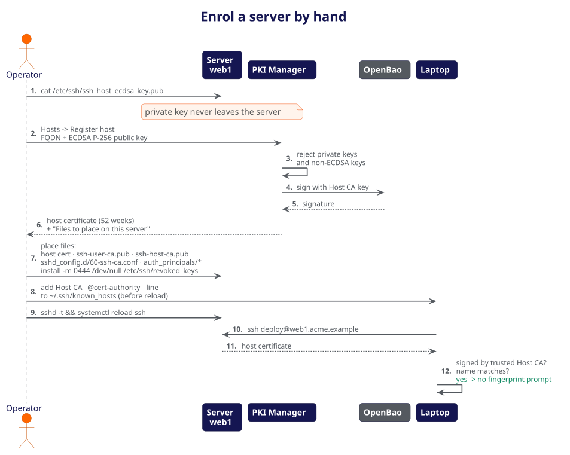
On the server
cat /etc/ssh/ssh_host_ecdsa_key.pub # send ONLY this (PKI Manager accepts only ecdsa-sha2-nistp256)In PKI Manager: Hosts → Register host (FQDN + key, Issue a host certificate immediately on). The host page shows Files to place on this server:
| File | Path |
|---|---|
| Host certificate (52 weeks) | /etc/ssh/ssh_host_ecdsa_key-cert.pub |
| User CA public key | /etc/ssh/ssh-user-ca.pub |
| Host CA public key (KRL signature anchor) | /etc/ssh/ssh-host-ca.pub |
| sshd config file | /etc/ssh/sshd_config.d/60-ssh-ca.conf |
| Principals per account | /etc/ssh/auth_principals/<account> |
| Revocation list (must exist) | /etc/ssh/revoked_keys |
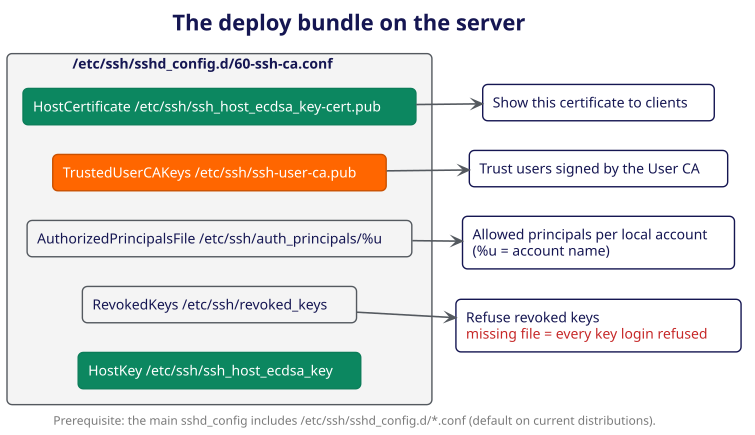
sudo install -m 0444 /dev/null /etc/ssh/revoked_keys # missing file = every key login refused
sudo sshd -t && sudo systemctl reload ssh # RHEL: sshdOn every laptop (do it before the reload)
curl "https://pki.acme.example/ssh/zones/default/cert-authority?pattern=*.acme.example" \
>> ~/.ssh/known_hosts
ssh deploy@web1.acme.example # use the exact name in the host certificateUser certificates: log in with a signed key
Create an identity, issue a one-week certificate for the user's public key, install it next to the key.
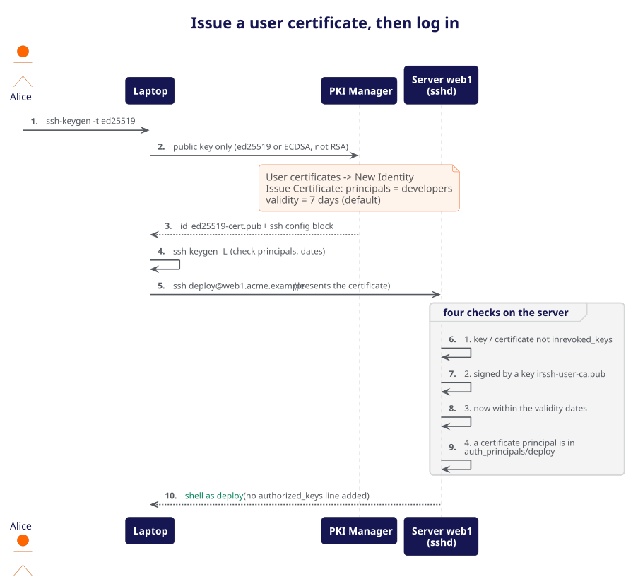
ssh-keygen -t ed25519 -f ~/.ssh/id_ed25519 # Ed25519 or ECDSA; RSA is not accepted
cat ~/.ssh/id_ed25519.pub # send ONLY thisIn PKI Manager: User certificates → New Identity, then Issue Certificate (principals, default validity 7 days). The form shows where each principal is mapped.
# save as ~/.ssh/id_ed25519-cert.pub (same name + -cert.pub)
Host *.acme.example
IdentityFile ~/.ssh/id_ed25519
CertificateFile ~/.ssh/id_ed25519-cert.pub
IdentitiesOnly yes
ssh-keygen -L -f ~/.ssh/id_ed25519-cert.pub # key ID, principals, validity
ssh deploy@web1.acme.exampleThe server checks four things: not revoked, signed by the User CA, within the dates, and a principal that matches. Next week: issue a new certificate for the same key.
Principals: the one rule that matters
A principal is a role label. It gives access only when it is in two places.
/etc/ssh/auth_principals/<account> on the server.
Otherwise: signature OK, but Permission denied (publickey); sshd logs
Certificate does not contain an authorized principal.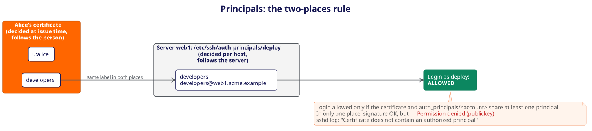
In PKI Manager: Principals → create the principal in the catalog → map it per host to a
local account (developers → deploy on web1). The host shows Stale — needs push
until you deploy the file and click Mark pushed (it records only; it deploys nothing).
The local account must already exist.
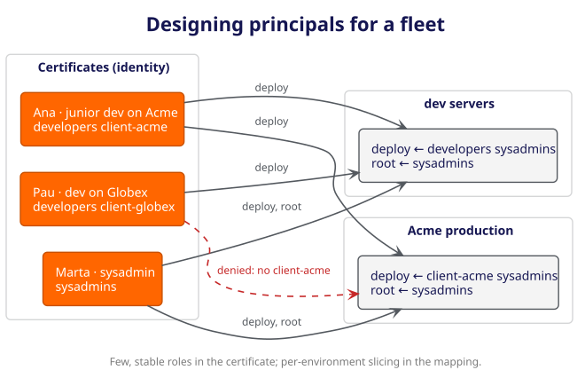
- Certificate = identity, follows the person. Mapping = policy, follows the server.
- Few, stable roles (
developers,sysadmins) plus scopes (client-acme). Slice per environment in the mapping.
Lifecycle: expiry, revocation, rotation
Short lifetimes first; the KRL for emergencies.
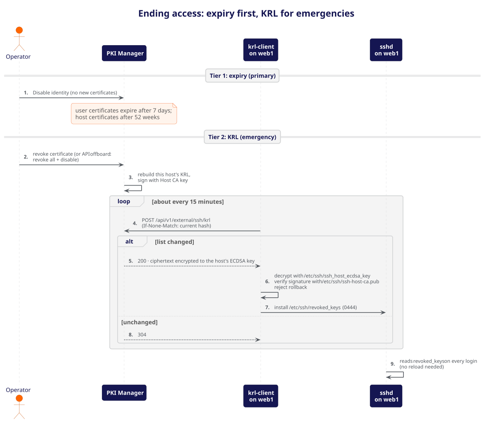
| Need | Action |
|---|---|
| Stop new certificates | Disable the identity; old ones expire within 7 days |
| Someone leaves | Offboard the identity: revokes all active certificates (KRL) + disables. Cannot be undone |
| Revoke one certificate now | Revoke it → KRL → hosts pull it (≈15 min with krl-client) |
| Decommission a server | Offboard the host (final) and destroy its host key: laptops do not check the KRL |
| Rotate a CA | Rotate → old CA "rotating" (still trusted), new CA signs. Deploy new trust files first; retire the old CA when its certificates expire |
Remove old authorized_keys entries: sshd still accepts them. Run NTP/chrony on
every server and laptop.
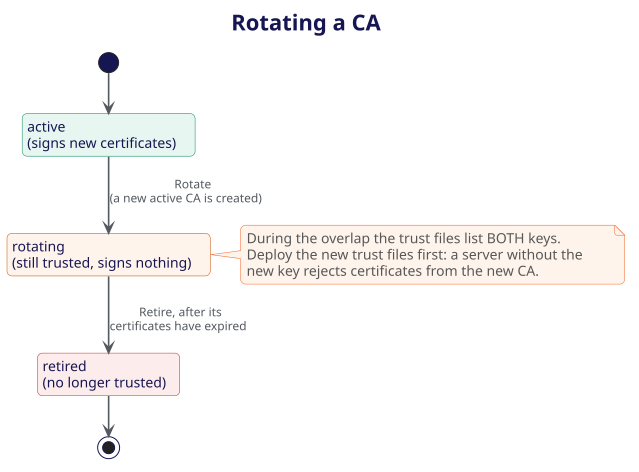
Per-host access blocks
Cut one person off one server, keep the rest. A block is not a revocation.
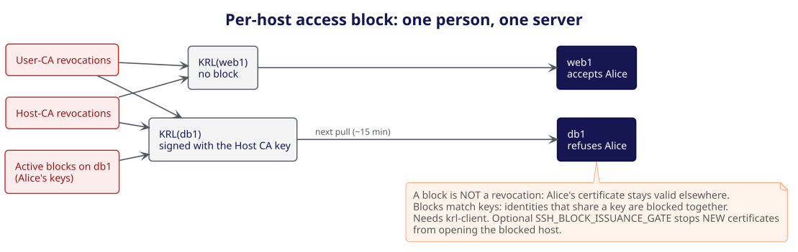
Host page → Block user… → pick the identity, add a reason, confirm. Undo with Unblock. The KRL page shows each host's state:
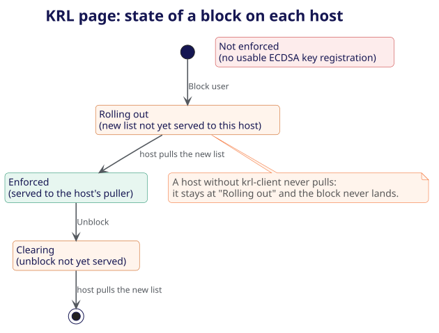
Limits: one pull interval of delay; a person who can still get certificates could use a new key
in that window — the optional SSH_BLOCK_ISSUANCE_GATE stops new certificates from
opening the blocked host.
Zones: separate trust domains
Prod and staging, or customer A and B, in one PKI Manager — with a real boundary.
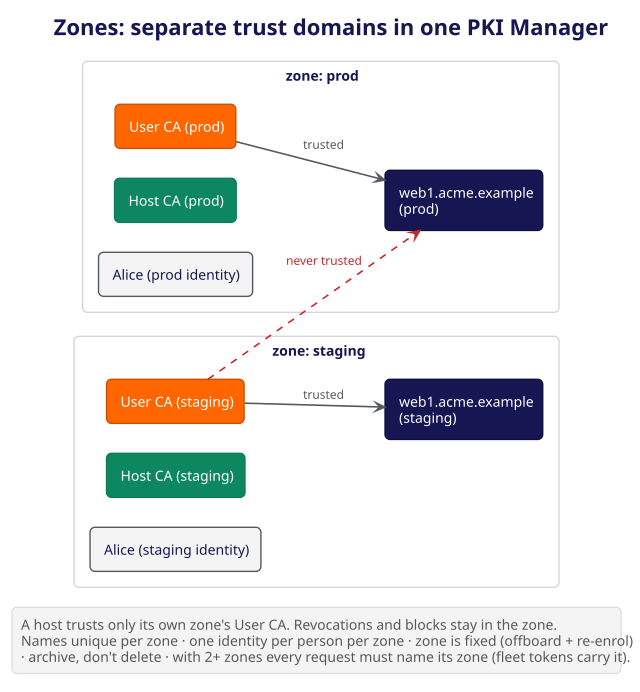
- Names are unique per zone; one identity per person per zone.
- A host cannot change zone: offboard and enrol it again. Archive a zone; do not delete it.
- With two or more zones, every request must name its zone, or PKI Manager refuses
(
zone is ambiguous — 2 zones exist (prod, staging); specify one explicitly). Fleet tokens carry their zone. Use the zone switcher in the UI.
Automation: fleet tokens and Ansible
Let servers enrol themselves with a scoped token and the Ansible role.
SSH → Fleet tokens → Mint token, preset Self-provisioning host with KRL
(recommended) = sign-host, get-principals,
register-host-pubkey. Shown once (pkimg_…); PKI Manager keeps only a
hash. Store it in Ansible Vault.
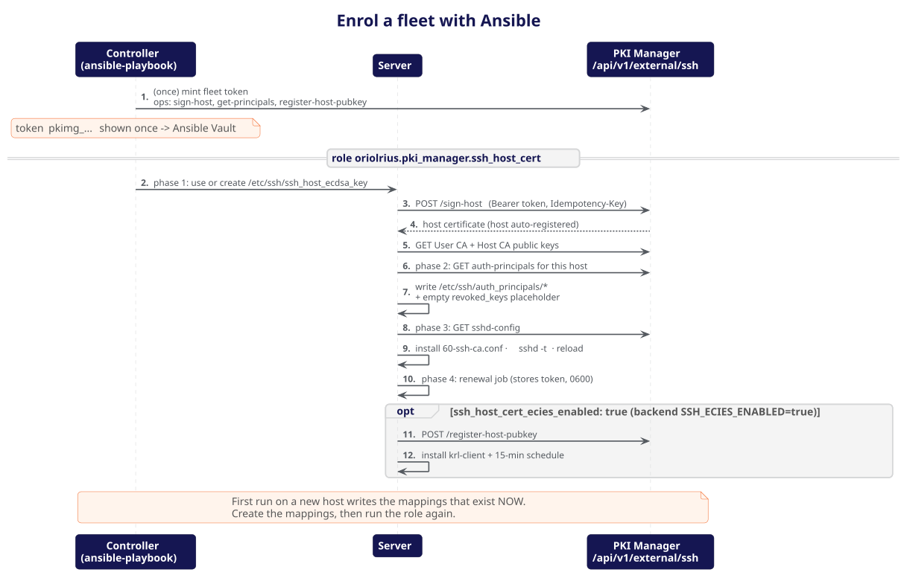
ansible-galaxy collection install oriolrius.pki_manager
- hosts: sshservers
become: true
vars:
ssh_ca_base_url: https://pki.acme.example
ssh_ca_fleet_token: "{{ vault_fleet_token }}"
# live revocation + blocks (backend: SSH_ECIES_ENABLED=true)
ssh_host_cert_ecies_enabled: true
ssh_host_cert_krl_client_url: https://artifacts.acme.example/krl-client-linux-amd64
ssh_host_cert_krl_client_checksum: "sha256:…"
roles:
- oriolrius.pki_manager.ssh_host_cert- On a new host: run the role, create the mappings, run it again.
- CI:
POST /api/v1/external/ssh/sign-user, optionally locked withforceCommandandsourceAddress. - Renewal stores the token on the host (
/etc/pki-manager/ssh-renew.env, 0600); setssh_host_cert_renew_enabled: falseto renew from the controller.
Recap and troubleshooting
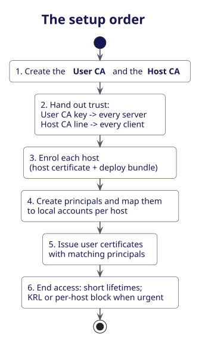
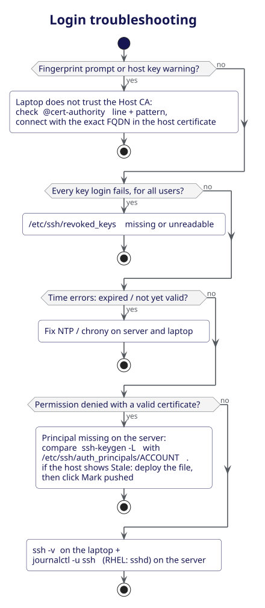
| Symptom | Cause / fix |
|---|---|
| Still asked about the fingerprint | @cert-authority line missing or pattern does not match; connect with the exact FQDN in the host certificate |
Permission denied with a valid certificate | Principal not in auth_principals/<account>; host "Stale" |
| Every key login fails, all users | /etc/ssh/revoked_keys missing or unreadable |
| Expired too early / not yet valid | Clock: NTP / chrony |
| Anything else | ssh -v on the laptop, journalctl -u ssh (RHEL: sshd) on the server |
More detail: How it works · End-to-end deploy reference · Principals guide · Per-host blocks runbook · Zones · Automation API